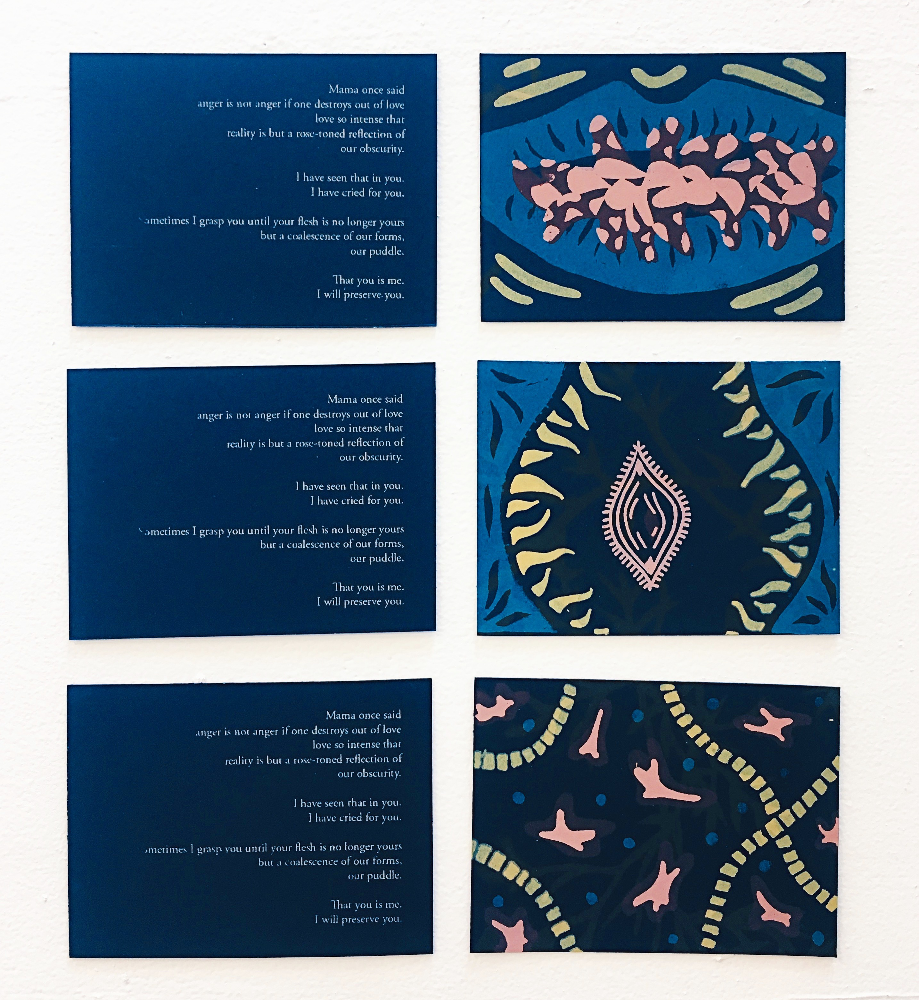

Some essays, poetry, and musings about words, sounds and reflections on images.
Pocket Poems
Some palm-sized poems about intimacy and self-preservation. These were
screen-printed on four layers of color on navy cardstock.
screen-printed on four layers of color on navy cardstock.
